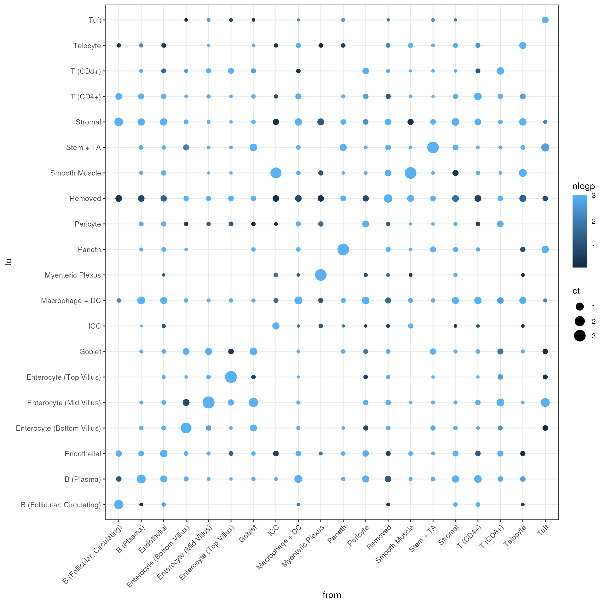

cell_interactions.Rmd
eh <- ExperimentHub()## snapshotDate(): 2022-10-24## ExperimentHub with 9 records
## # snapshotDate(): 2022-10-24
## # $dataprovider: Boston Children's Hospital
## # $species: Mus musculus
## # $rdataclass: data.frame, matrix, EBImage
## # additional mcols(): taxonomyid, genome, description,
## # coordinate_1_based, maintainer, rdatadateadded, preparerclass, tags,
## # rdatapath, sourceurl, sourcetype
## # retrieve records with, e.g., 'object[["EH7543"]]'
##
## title
## EH7543 | Petukhov2021_ileum_molecules
## EH7544 | Petukhov2021_ileum_dapi
## EH7545 | Petukhov2021_ileum_membrane
## EH7547 | Petukhov2021_ileum_baysor_segmentation
## EH7548 | Petukhov2021_ileum_baysor_counts
## EH7549 | Petukhov2021_ileum_baysor_coldata
## EH7550 | Petukhov2021_ileum_baysor_polygons
## EH7551 | Petukhov2021_ileum_cellpose_counts
## EH7552 | Petukhov2021_ileum_cellpose_coldata
spe <- MerfishData::MouseIleumPetukhov2021(segmentation = "baysor",
use.images = FALSE,
use.polygons = FALSE)
spe## class: SpatialExperiment
## dim: 241 5800
## metadata(0):
## assays(2): counts molecules
## rownames(241): Acsl1 Acta2 ... Vcan Vim
## rowData names(0):
## colnames: NULL
## colData names(7): n_transcripts density ... leiden_final sample_id
## reducedDimNames(0):
## mainExpName: NULL
## altExpNames(0):
## spatialCoords names(2) : x y
## imgData names(0):To identify cells that are in close proximity to each other, we use
the buildSpatialGraph function from the imcRtools
package. The function constructs interaction graphs using either (i)
cell-centroid expansion, (ii) k-nearest neighbor search, or
(iii) delaunay triangulation.
Here, we use a k-nearest neighbor search with k = 5, which accordingly constructs a graph based on the 5 closest cells for each cell.
spe <- imcRtools::buildSpatialGraph(spe,
img_id = "sample_id",
type = "knn",
k = 5,
coords = c("x", "y"))
colPairs(spe)## List of length 1
## names(1): knn_interaction_graph
colPair(spe, "knn_interaction_graph")## SelfHits object with 29000 hits and 0 metadata columns:
## from to
## <integer> <integer>
## [1] 1 2
## [2] 1 3
## [3] 1 4
## [4] 1 5
## [5] 1 6
## ... ... ...
## [28996] 5800 4145
## [28997] 5800 4158
## [28998] 5800 4164
## [28999] 5800 4177
## [29000] 5800 5780
## -------
## nnode: 5800To identify recurrent interactions between cell type labels, we use
the countInteractions and testInteractions
functions from the imcRtools
package.
The countInteractions function counts the number of
edges (interactions) between each pair of cell labels. Simplified, it
counts for each cell of type A the number of neighbors of type B.
This count can be averaged within each grouping level
(e.g. image/sample) in different ways. Here, we use
method = "classic" to divide the interaction count is
divided by the total number of cells of type A. The final count can be
interpreted as “How many neighbors of type B does a cell of type A have
on average?”.
ia.counts <- imcRtools::countInteractions(spe,
group_by = "sample_id",
label = "leiden_final",
colPairName = "knn_interaction_graph",
method = "classic")
ind <- order(ia.counts$ct, decreasing = TRUE)
ia.counts <- ia.counts[ind,]
ia.counts## DataFrame with 400 rows and 4 columns
## group_by from_label to_label ct
## <character> <factor> <factor> <numeric>
## 1 ileum Enterocyte (Mid Villus) Enterocyte (Mid Villus) 3.27532
## 2 ileum Enterocyte (Top Villus) Enterocyte (Top Villus) 3.19375
## 3 ileum Smooth Muscle Smooth Muscle 3.07243
## 4 ileum Paneth Paneth 3.05183
## 5 ileum Myenteric Plexus Myenteric Plexus 3.03226
## ... ... ... ... ...
## 396 ileum Tuft Pericyte 0
## 397 ileum Tuft Smooth Muscle 0
## 398 ileum Tuft T (CD4+) 0
## 399 ileum Tuft T (CD8+) 0
## 400 ileum Tuft Telocyte 0Given these average interaction counts between cell type labels, we can then test if the obtained count is larger or smaller compared to what is expected from a random distribution of cell labels.
For this, we use the testInteractions function from the
imcRtools
package, which permutes the cell labels and counts interactions as
described above. This approach generates a distribution of the
interaction count under a random distribution of cell labels. The
observed interaction count is compared against this null distribution to
derive empirical p-values:
ia.sig <- imcRtools::testInteractions(spe,
group_by = "sample_id",
label = "leiden_final",
colPairName = "knn_interaction_graph",
method = "classic")
sort.df <- data.frame(p = ia.sig$p, ct = -ia.sig$ct)
ind <- do.call(order, sort.df)
ia.sig <- ia.sig[ind,]
ia.sig## DataFrame with 400 rows and 10 columns
## group_by from_label to_label ct
## <character> <factor> <factor> <numeric>
## 1 ileum Enterocyte (Mid Villus) Enterocyte (Mid Villus) 3.27532
## 2 ileum Enterocyte (Top Villus) Enterocyte (Top Villus) 3.19375
## 3 ileum Smooth Muscle Smooth Muscle 3.07243
## 4 ileum Paneth Paneth 3.05183
## 5 ileum Myenteric Plexus Myenteric Plexus 3.03226
## ... ... ... ... ...
## 396 ileum Telocyte Myenteric Plexus 0.026087
## 397 ileum Tuft Myenteric Plexus 0.000000
## 398 ileum Myenteric Plexus Tuft 0.000000
## 399 ileum Tuft ICC 0.000000
## 400 ileum ICC Tuft 0.000000
## p_gt p_lt interaction p sig sigval
## <numeric> <numeric> <logical> <numeric> <logical> <numeric>
## 1 0.000999001 1 TRUE 0.000999001 TRUE 1
## 2 0.000999001 1 TRUE 0.000999001 TRUE 1
## 3 0.000999001 1 TRUE 0.000999001 TRUE 1
## 4 0.000999001 1 TRUE 0.000999001 TRUE 1
## 5 0.000999001 1 TRUE 0.000999001 TRUE 1
## ... ... ... ... ... ... ...
## 396 0.614386 0.631369 TRUE 0.614386 FALSE 0
## 397 1.000000 0.623377 FALSE 0.623377 FALSE 0
## 398 1.000000 0.630370 FALSE 0.630370 FALSE 0
## 399 1.000000 0.653347 FALSE 0.653347 FALSE 0
## 400 1.000000 0.660340 FALSE 0.660340 FALSE 0This seem to primarily work out that cells of the same type tend to be close to each other, which is also apparent from spatial domain organization in the image.
Which cells of different cell types tend to be disproportionately often close to each other?
ind <- ia.sig$from_label != ia.sig$to_label
head(ia.sig[ind,], n = 10)## DataFrame with 10 rows and 10 columns
## group_by from_label to_label ct
## <character> <factor> <factor> <numeric>
## 1 ileum ICC Smooth Muscle 2.612903
## 2 ileum Goblet Enterocyte (Mid Villus) 1.545151
## 3 ileum Tuft Enterocyte (Mid Villus) 1.444444
## 4 ileum B (Follicular, Circulating) Stromal 1.343750
## 5 ileum Macrophage + DC B (Plasma) 1.007026
## 6 ileum Telocyte Smooth Muscle 0.982609
## 7 ileum T (CD8+) Enterocyte (Mid Villus) 0.960000
## 8 ileum B (Plasma) Macrophage + DC 0.938492
## 9 ileum T (CD4+) B (Plasma) 0.857868
## 10 ileum Goblet Stem + TA 0.836120
## p_gt p_lt interaction p sig sigval
## <numeric> <numeric> <logical> <numeric> <logical> <numeric>
## 1 0.000999001 1 TRUE 0.000999001 TRUE 1
## 2 0.000999001 1 TRUE 0.000999001 TRUE 1
## 3 0.000999001 1 TRUE 0.000999001 TRUE 1
## 4 0.000999001 1 TRUE 0.000999001 TRUE 1
## 5 0.000999001 1 TRUE 0.000999001 TRUE 1
## 6 0.000999001 1 TRUE 0.000999001 TRUE 1
## 7 0.000999001 1 TRUE 0.000999001 TRUE 1
## 8 0.000999001 1 TRUE 0.000999001 TRUE 1
## 9 0.000999001 1 TRUE 0.000999001 TRUE 1
## 10 0.000999001 1 TRUE 0.000999001 TRUE 1Let’s also visualize the pairwise interaction counts between cell type labels:
df <- subset(ia.sig, ct > 0)
df <- data.frame(df)
df$sig <- factor(df$sig, levels = c(TRUE, FALSE))
df$nlogp <- -log10(df$p)Here we only look at whether an interaction count surpassed a signficance threshold of 0.01.
ggplot(df, aes(x = from_label, y = to_label, size = ct, color = sig)) +
geom_point() +
xlab("from") +
ylab("to") +
theme_bw() +
theme(axis.text.x = element_text(angle = 45, hjust = 1))Here we also look at the magnitude of the effect.
ggplot(df, aes(x = from_label, y = to_label, size = ct, color = nlogp)) +
geom_point() +
xlab("from") +
ylab("to") +
theme_bw() +
theme(axis.text.x = element_text(angle = 45, hjust = 1))